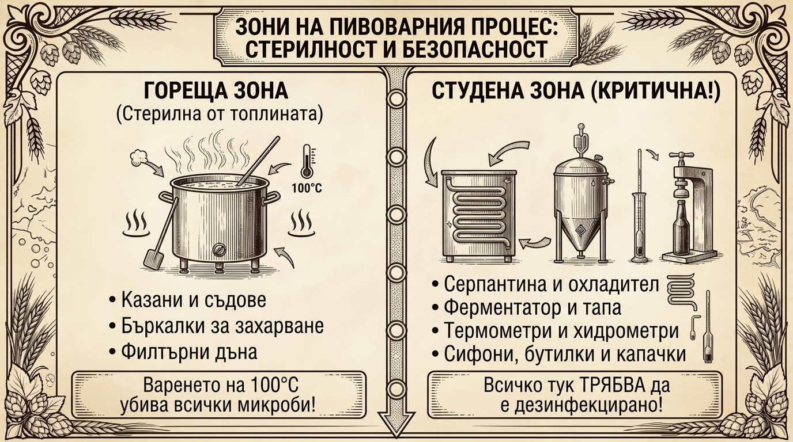

Хигиенната дисциплина: невидимият фундамент на доброто пиво
В практиката на всеки пивовар бързо се налага едно просто осъзнаване: докато термичната преработка на съставките отнема няколко часа, истинската битка за качествена партида се води около безупречната чистота на съдовете и оборудването. Малките отклонения в температурата на озахаряване или в съотношението на солите могат да променят нюансите на тялото и цвета, но получената напитка пак ще бъде пивка и приятна. За разлика от тях, допускането дори на минимално микробиологично замърсяване в охладената мъст обрича целия вложен труд и суровини на сигурен брак. Добрата хигиенна рутина е умението, което категорично разграничава майсторското пиво от вкисналата партида.
3.1. Двете стъпки на хигиената: механично почистване и дезинфекция
Често начинаещите приравняват измиването на съдовете с тяхното обеззаразяване, но в пивоварството това са две коренно различни, последователни операции:
-
Механично и химическо почистване (Cleaning):
Целта на този първи етап е цялостното отстраняване на физическите замърсявания: засъхнали кори от пяна, белтъчни пръстени по казана, малцов прах, отработени дрождени утайки, хмелни частици и варовикови отлагания.Първостепенен принцип: Химическата дезинфекция има нулев ефект върху недобре измити повърхности! Дезинфекциращите препарати унищожават микроорганизмите единствено при непосредствен контакт с техните клетки. Ако по стените на съда или в маркучите има дори тънък органичен слой, бактериите и дивите дрожди остават изолирани под него и продължават своето развитие необезпокоявани.
-
Дезинфекция и биологичен контрол (Sanitizing):
След като повърхността е напълно чиста и гладка, следва редуцирането на нежеланата микрофлора (диви бактерии, диви дрожди и плесени). Докато пълната стерилизация (100% унищожаване на всяка форма на живот) се постига единствено в автоклав или чрез продължително кипене, за ферментатора и студените съдове е достатъчно постигането на санитарно ниво, при което бактериалният товар намалява с над 99.999% (5 log редукция). Това гарантира, че селектираните пивоварни дрожди ще доминират средата без каквато и да е конкуренция.
3.2. Температурната граница: кога процесът става уязвим?
По време на майшуването, промиването и най-вече бурно врещото варене при 100°C в продължение на 60 до 90 минути, топлината служи като естествен и безотказен стерилизатор. В тази гореща фаза риск от микробиологично заразяване практически не съществува.
- Критичният преход: Опасността настъпва в момента, в който изключите котлона и стартирате охлаждането. Падането на температурата под 60°C към диапазона за засяване (18–20°C) превръща сладката, наситена с аминокиселини и минерали пивна мъст в най-благодатната среда за развитие на диви бактерии (като Lactobacillus, Pediococcus, Acetobacter), носещи се свободно във въздуха или полепнали по неизмити повърхности.
- Оперативното правило: От момента на спиране на огъня нататък, абсолютно всеки детайл, прибор, термометър, кран или маркуч, който влиза в пряк или косвен досег с охлаждащата се течност, задължително трябва да бъде предварително дезинфекциран!

3.3. Организация на работния процес: подготовка преди охлаждането
Най-честият организационен капан за неопитния пивовар е да отложи приготвянето на препаратите и миенето на ферментатора за момента, в който горещият казан вече изстива. В стремежа да се охлади по-бързо се появява суматоха, при която лесно се пропуска дезинфекцията на дребни детайли като крана или уплътненията.
- Предварителен разтвор: Подгответе своя работен дезинфектант още по време на спокойния интервал на варене на хмела (през 60-те минути врене).
- Потопяване на приборите: Накиснете предварително във ферментатора или в чист съд всички спомагателни принадлежности – воден клапан, гумена тапа, термометър, бъркалка и силиконови маркучи, за да са в готовност в точния момент.
3.4. Преглед на приложимите дезинфектанти в пивоварството
Важно предупреждение: обикновените домакински почистващи гелове и ароматизирани препарати за чинии не са подходящи за третиране на съдове в студената фаза. Техните ароматни добавки и мастни повърхностноактивни компоненти образуват микрофилм, който разваля бирената пяна и внася парфюмен страничен оттенък.
-
Киселинни дезинфектанти без изплакване (Star San, ChemiPro San, StellarSan):
- Принцип на действие: Комбинация от фосфорна киселина с висока степен на чистота и повърхностноактивни вещества, действащи при силно киселинно pH (под 3.5).
- Време за реакция: Изключително бързо контактно действие – достатъчни са от 60 до 120 секунди контакт с навлажнената повърхност.
- Поведение на пяната: Характерната гъста бяла пяна запълва всички микропори и ъгли на пластмасовите и стъклени съдове. Тя не бива да се отмива с чешмяна вода, за да не се внесат нови замърсители. При пълнене на ферментатора с пивна мъст разредената киселина се неутрализира напълно, а фосфатите служат като естествено минерално подхранване за растежа на дрождевите клетки.
- Дозиране и трайност: Концентриран състав – около 1.5 – 1.6 мл на 1 литър вода. Приготвен с чиста дестилирана или осмозна вода и затворен плътно, разтворът запазва активността си в продължение на месеци, стига pH да се поддържа под 3.5.
-
Натриев перкарбонат с активен кислород (ChemiPro Oxi, Sodium Percarbonate):
- Принцип на действие: Прахообразно съединение, което в топла вода отделя кислородни радикали и калцинирана сода, окислявайки органичните следи.
- Силни страни: Съчетава умерено дезинфекциращо действие с отлична способност за разграждане на засъхнали налепи и дрождени пръстени, без да отделя хлорни или други тежки миризми.
- Начин на работа: Разтваря се в умерено топла вода (40–50°C, около 4 грама на 1 литър), съдовете се киснат 10–15 минути и след това се оставят да се отцедят хубаво.
-
Медицински етилов или изопропилов спирт (70%):
- Защо точно 70%: Чистият 96-градусов алкохол предизвиква твърде бърза коагулация на външните протеини на бактериалната обвивка, създавайки защитна преграда, под която клетката може да остане жива. Добавените 30% вода забавят процеса точно толкова, че спиртът да навлезе в дълбочина и да разруши вътрешната структура на микроорганизма.
- Предимства: Моментална реакция при напръскване и пълно изпаряване без остатъчен слой или страничен мирис.
- Практическо приложение: Зарежда се в малък флакон с помпа за експресно обеззаразяване на пробовземачи, спирателни кранове, ножици за опаковки, външни ръбове на съдове и ръцете на пивоваря.
-
Йодни комплекси (Iodophor):
- Характеристика: Формула на йодна основа, ефективна при концентрации от порядъка на 12.5–25 ppm активен йод (около 1.25 мл на 5 литра вода).
- Специфика: Работи без изплакване при стриктна дозировка, но изисква внимателно боравене – превишаването на количеството оставя неприятен аптечен привкус, а при по-продължителен контакт пластмасовите ферментатори и маркучи придобиват траен кафеникав цвят.
3.5. Практически съвети за домашното работно място
- Снабдяване с материали: Основните пивоварни препарати (киселинни концентрати и кислородни прахове) са налични в специализираните магазини за пивоварни консумативи у нас (Пивовар, Homebrew.bg, Crafty и др.). 70-градусовият медицински спирт е лесно достъпен във всяка стандартна аптека.
- Употреба на спрей-бутилка: Вместо да приготвяте десетки литри разтвор и да пълните целия ферментатор догоре, по-икономично и бързо е да държите 1 литър готов препарат в качествен пулверизатор. Няколко равномерни впръсквания покриват вътрешността на съда с тънък филм и фина пяна, спестявайки време и вода.
3.6. Контролен списък преди ферментация и бутилиране
Следвайте този списък преди преточването на охладената мъст и при подготовката на бутилките:
- Ферментационният съд (пластмасово ведро или стъклена дамаджана) заедно с прилежащия капак.
- Гуменият уплътнител и хидрозатворът (водната тапа / airlock).
- Охладителната серпантина (потапя се в казана за термична дезинфекция 15 мин преди края на вренето, а външните ѝ накрайници се напръскват с разтвор).
- Термометърът, хидрометърът или рефрактометърът ведно с епруветката за вземане на контролна проба.
- Преливният сифон, силиконовите маркучи и изпускателният кран на съда.
- Бъркалката или лъжицата, ако се налага разбъркване след сваляне от котлона.
- Опаковката със сухи пивоварни дрожди и режещият инструмент (ножица), с който я отваряте!
- Ръцете на работещия (обеззаразени с пулверизатор със 70% спирт непосредствено преди засяването).
- Бутилките, капачките и затварачката в деня на финалното бутилиране.